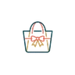

Panduan Tas Seminar Kit: Bahan, Isi Paket, dan Cara Memilih

Penulis: Tim Redaksi Goodie Bag • Diperbarui: • Waktu Baca: 9 Menit
Panduan tas seminar kit membantu panitia memilih bahan, ukuran, isi paket, dan vendor sesuai jumlah peserta, anggaran, serta kebutuhan acara profesional Anda.
📌 Ringkasan Inti Panduan:
- Tas seminar kit merupakan perlengkapan peserta yang dapat dikustomisasi dengan identitas acara.
- Bahan populer meliputi spunbond, blacu, dan kanvas dengan karakteristik berbeda.
- Paket seminar kit dapat berisi notebook, pulpen, lanyard, tumbler, dan perlengkapan lainnya.
- Pemilihan ukuran, metode cetak, dan waktu produksi perlu disesuaikan dengan kebutuhan.
- Vendor sebaiknya dipilih berdasarkan spesifikasi, kejelasan penawaran, dan kesiapan produksi.
🚚 Layanan Workshop Malang & Pengiriman Kargo Nasional: Kami melayani konsultasi langsung di workshop Kota Malang serta pengiriman kargo hemat ke seluruh Indonesia. Minimum order (MOQ) mulai 50 pcs dengan komitmen mutu rapi dan kompensasi cacat sesuai kesepakatan. Pelajari syarat lengkap di Syarat & Ketentuan Pemesanan.
1. Apa Itu Tas Seminar Kit?
Tas seminar kit adalah tas khusus untuk membawa dokumen dan perlengkapan peserta seminar, workshop, pelatihan, konferensi, serta kegiatan profesional lainnya.
Tas seminar kit biasanya menjadi bagian dari paket perlengkapan acara yang dibagikan kepada peserta saat registrasi. Tas tersebut dapat dibuat menggunakan spunbond, blacu, kanvas, atau bahan lainnya sesuai kebutuhan penyelenggara.
Perbedaan utama tas seminar dengan tas belanja biasa terletak pada tujuan penggunaannya. Tas seminar umumnya dirancang untuk membawa beberapa perlengkapan sekaligus, seperti:
- Notebook atau buku catatan.
- Pulpen untuk mencatat materi.
- Map dan dokumen seminar.
- Kartu identitas peserta.
- Materi presentasi atau buku panduan.
- Merchandise tambahan dari penyelenggara.
Selain fungsi penyimpanan, tas seminar juga menjadi media identitas visual. Logo perusahaan, nama kegiatan, tema seminar, dan identitas sponsor dapat dicetak pada permukaan tas. Bagi perusahaan dan instansi, keseragaman perlengkapan peserta membantu menghadirkan tampilan acara yang lebih tertata. Sementara bagi peserta, tas yang nyaman dan fungsional dapat dimanfaatkan kembali setelah acara selesai.
2. Mengapa Tas Seminar Kit Penting untuk Penyelenggaraan Acara?
Tas seminar kit membantu panitia mendistribusikan perlengkapan peserta secara praktis sekaligus menghadirkan identitas acara yang konsisten, rapi, dan mudah dikenali.
Penyelenggaraan seminar membutuhkan koordinasi berbagai kebutuhan, mulai dari registrasi hingga pembagian materi. Apabila perlengkapan peserta diberikan secara terpisah, panitia perlu menyediakan waktu tambahan untuk memastikan seluruh kebutuhan diterima dengan lengkap. Tas seminar membantu menyatukan perlengkapan tersebut dalam satu kemasan.
Mempermudah Distribusi Perlengkapan
Panitia dapat menyiapkan paket sesuai jumlah peserta sebelum acara berlangsung. Setiap tas diisi dengan perlengkapan yang telah ditentukan sehingga proses pembagian pada meja registrasi lebih sederhana. Pengemasan sebelum hari acara juga memudahkan pemeriksaan kelengkapan barang.
Meningkatkan Kerapian Penyelenggaraan
Tas dengan warna dan desain seragam membantu menciptakan tampilan kegiatan yang lebih profesional. Hal tersebut relevan untuk seminar perusahaan, rapat koordinasi, pelatihan instansi, hingga simposium nasional.
Menjadi Media Identitas Acara
Logo yang dicetak pada tas memungkinkan identitas penyelenggara tetap terlihat ketika tas digunakan kembali. Namun, manfaat promosi bergantung pada kualitas bahan, desain, kenyamanan, dan kebiasaan pengguna.
Mendukung Penggunaan Berulang
Tas yang cukup kuat dan memiliki desain fungsional berpotensi digunakan kembali untuk aktivitas sehari-hari. Dalam laporan tahun 2023, United Nations Environment Programme (UNEP) menyampaikan bahwa produksi plastik global melampaui 430 juta ton per tahun, dengan sekitar dua pertiga berupa produk berumur pakai pendek. Sementara itu, dokumen UNEP World Environment Day 2025 menyebutkan bahwa sekitar 9% plastik yang diproduksi secara global benar-benar didaur ulang.
Kedua data tersebut memperlihatkan pentingnya mempertimbangkan masa pakai produk dan pengurangan barang sekali pakai. Meski demikian, tas berbahan kain tidak otomatis lebih ramah lingkungan. Dampak lingkungan juga dipengaruhi bahan baku, proses produksi, frekuensi penggunaan, dan pengelolaan setelah digunakan.
3. Apa Saja Jenis Bahan Tas Seminar Kit?
Bahan tas seminar kit yang umum digunakan adalah spunbond, blacu, dan kanvas, dengan perbedaan pada tekstur, ketebalan, tampilan, serta biaya.
1. Tas Seminar Spunbond
Spunbond merupakan bahan nonwoven yang umumnya dibuat dari serat polipropilena dan diproses menjadi lembaran tanpa teknik tenun konvensional. Bahan ini sering digunakan untuk produksi goodie bag dalam jumlah besar.
Kelebihan spunbond meliputi bobot ringan, pilihan warna beragam, dan biaya yang relatif ekonomis. Spunbond cocok digunakan untuk seminar umum, pelatihan peserta dalam jumlah besar, kegiatan kampus, serta pembagian materi promosi. Namun, ketahanan tas bergantung pada ketebalan bahan, kualitas sambungan, dan berat barang yang dibawa.
2. Tas Seminar Blacu
Blacu merupakan bahan kain yang banyak digunakan untuk tas berpenampilan natural. Warna kain blacu biasanya cenderung krem atau broken white, meskipun hasil akhirnya dapat berbeda sesuai karakter bahan dan proses finishing.
Tas blacu sering dipilih untuk workshop kreatif, seminar pendidikan, kegiatan komunitas, dan acara perusahaan dengan konsep sederhana. Kelebihannya adalah tampilan natural, permukaan yang dapat dicetak, dan potensi penggunaan berulang apabila konstruksinya memadai. Kekurangannya, kain tertentu dapat mengalami penyusutan atau perubahan bentuk apabila perawatan tidak sesuai.
3. Tas Seminar Kanvas
Kanvas adalah kain yang umumnya memiliki struktur lebih kokoh dibanding kain tipis untuk penggunaan ringan. Tas kanvas sering digunakan untuk paket seminar dengan tampilan lebih eksklusif.
Bahan ini cocok untuk kegiatan perusahaan, konferensi profesional, forum eksekutif, dan paket peserta VIP. Kanvas memiliki beragam pilihan ketebalan dan karakter permukaan sehingga tidak seluruh tas kanvas mempunyai kualitas sama. Penyelenggara perlu memeriksa sampel untuk menilai ketebalan, kerapian jahitan, kekuatan tali, dan hasil cetak logo.

Perbandingan Singkat Bahan Tas Seminar
| Bahan | Karakter Utama | Kebutuhan yang Sesuai |
|---|---|---|
| Spunbond | Ringan dan ekonomis | Seminar massal & expo publik |
| Blacu | Natural dan fleksibel | Workshop, kampus, komunitas |
| Kanvas | Struktur relatif kokoh & premium | Seminar perusahaan dan paket VIP |
Pemilihan bahan tidak sebaiknya hanya berdasarkan harga per tas. Pertimbangkan juga berat isi, kondisi pemakaian, bentuk desain, dan kemungkinan penggunaan setelah seminar. Pembahasan teknis mendalam mengenai karakter setiap material tersedia dalam panduan perbandingan bahan tas seminar spunbond, blacu, dan kanvas.
4. Bagaimana Menentukan Ukuran Tas Seminar yang Tepat?
Ukuran tas seminar sebaiknya ditentukan berdasarkan dimensi dokumen terbesar, ketebalan isi, kebutuhan alas, dan ruang tambahan untuk kenyamanan pengguna.
Dokumen menjadi salah satu benda utama yang perlu diperhitungkan ketika memilih ukuran tas. Sebagai acuan, kertas A4 mempunyai dimensi 210 x 297 mm sebagaimana tercantum dalam ISO/IEC 23385:2022. Artinya, ukuran tas harus memberikan ruang lebih besar dibanding dimensi dokumen, terutama apabila kertas dimasukkan bersama map atau folder.
Beberapa pilihan ukuran yang tercantum dalam referensi produk Goodie Bag meliputi:
| Ukuran Tas | Rekomendasi Penggunaan |
|---|---|
| 25 × 35 cm | Dokumen ringkas dan perlengkapan ringan |
| 30 × 40 cm | Map dokumen A4/F4, notebook, dan alat tulis standar |
| 35 × 40 cm (Alas 8 cm) | Perlengkapan lebih tebal, tumbler, map binder, dan merchandise tambahan |
Mempertimbangkan Lebar dan Tinggi
Tas yang terlalu sempit dapat menyebabkan dokumen terlipat atau sulit dimasukkan. Sebaiknya tersedia toleransi ukuran yang cukup agar peserta dapat mengambil dan menyimpan dokumen dengan mudah.
Mempertimbangkan Ketebalan Isi
Notebook hardcover, tumbler, dan perlengkapan elektronik membutuhkan ruang berbeda dibanding dokumen kertas. Apabila paket memuat barang bervolume besar, tas dengan alas atau gusset dapat menjadi pilihan.
Memeriksa Ukuran Bersih
Ukuran luar tas belum tentu sama dengan ruang efektif di bagian dalam. Jahitan, lipatan, zipper, dan konstruksi bagian dasar dapat mengurangi ruang penyimpanan. Karena itu, panitia sebaiknya meminta konfirmasi ukuran bersih dari vendor sebelum menyetujui produksi.
5. Apa Saja Isi Paket Seminar Kit yang Umum Digunakan?
Isi paket seminar kit biasanya terdiri dari notebook, pulpen, dan identitas peserta, kemudian dapat ditambah tumbler atau merchandise sesuai kebutuhan acara.
Paket seminar kit tidak harus berisi banyak barang. Pemilihan perlengkapan yang benar-benar digunakan peserta lebih penting dibanding menambahkan produk hanya untuk membuat paket terlihat penuh.
Perlengkapan Dasar
Paket dasar biasanya mencakup tas seminar, notebook, dan pulpen. Kombinasi tersebut cukup relevan untuk kegiatan dengan sesi pencatatan dan diskusi.
Perlengkapan Administrasi
Untuk seminar dengan registrasi formal, panitia dapat menambahkan lanyard, ID card, map dokumen, dan agenda kegiatan. Dokumen tambahan sebaiknya diberikan berdasarkan kebutuhan operasional.
Merchandise Tambahan
Tumbler, pouch, flashdisk, dan perlengkapan teknologi dapat dipertimbangkan untuk peserta tertentu. Pemilihan merchandise sebaiknya memperhatikan fungsi, anggaran, dan kesesuaian dengan karakter audiens.
Paket Khusus Pembicara
Narasumber dan tamu VIP dapat menerima paket berbeda. Penyelenggara dapat mempertimbangkan notebook premium, pulpen metal, tumbler, atau merchandise dengan personalisasi nama. Paket untuk tamu khusus tidak harus memakai seluruh item pada paket peserta umum.
Untuk menentukan konfigurasi yang paling sesuai, baca ulasan lengkap kami mengenai panduan isi paket seminar kit simple, standard, dan premium.
6. Bagaimana Cara Menyesuaikan Seminar Kit dengan Anggaran?
Anggaran seminar kit perlu dihitung berdasarkan jumlah peserta, spesifikasi produk, biaya kustomisasi, pengemasan, serta kebutuhan pengiriman dan cadangan produksi.
Kesalahan dalam penganggaran biasanya terjadi ketika panitia hanya memperhitungkan harga tas tanpa menghitung perlengkapan tambahan. Langkah pertama adalah menentukan batas anggaran untuk setiap peserta. Selanjutnya, bagi anggaran tersebut menjadi beberapa komponen:
- Biaya tas seminar utama.
- Biaya notebook dan alat tulis.
- Biaya cetak logo (sablon/DTF/bordir).
- Biaya merchandise tambahan (tumbler, lanyard, pouch).
- Biaya pengemasan dan distribusi kargo.
Sebagai ilustrasi perencanaan, apabila panitia menyiapkan anggaran perlengkapan Rp5.000.000 untuk 100 peserta, anggaran rata-ratanya adalah Rp50.000 per peserta. Angka tersebut merupakan contoh perhitungan, bukan penawaran harga dari vendor. Biaya aktual bergantung pada bahan, desain, jumlah pesanan, dan kebutuhan tambahan.
7. Bagaimana Proses Pembuatan Tas Seminar Custom?
Proses pembuatan tas seminar custom umumnya meliputi konsultasi kebutuhan, penentuan spesifikasi, pembuatan desain, persetujuan visual, produksi, pemeriksaan kualitas, dan pengiriman.
- Tahap 1: Menentukan Kebutuhan: Panitia menyiapkan informasi jumlah peserta, jenis acara, tanggal pelaksanaan, serta barang yang akan dimasukkan ke dalam tas.
- Tahap 2: Menentukan Material: Pilihan bahan ditentukan berdasarkan kebutuhan penggunaan (spunbond, blacu, kanvas, atau drill).
- Tahap 3: Menentukan Desain: Logo penyelenggara dan identitas sponsor disiapkan dalam format vektor atau resolusi tinggi.
- Tahap 4: Menyetujui Mockup: Desainer menyiapkan digital preview 2D untuk memverifikasi proporsi dan warna cetak.
- Tahap 5: Produksi: Proses potong bahan, sablon, jahit, dan pembersihan benang berjalan 5-8 hari kerja setelah desain disetujui.
- Tahap 6: Pemeriksaan dan Pengiriman: Quality control memeriksa kelengkapan jumlah dan hasil jahitan sebelum barang dikemas rapi.
Panduan lengkap tahapan pengadaan dapat disimak pada artikel cara pesan tas seminar custom dari desain hingga pengiriman.
8. Bagaimana Memilih Vendor Tas Seminar Kit di Malang?
Vendor tas seminar kit di Malang sebaiknya dipilih berdasarkan kejelasan spesifikasi, pengalaman pengerjaan, kualitas sampel, komunikasi, dan kesanggupan memenuhi jadwal acara.
Lokasi vendor memang menjadi pertimbangan penting, terutama untuk panitia yang membutuhkan koordinasi langsung di area Malang Raya. Namun, pemilihan vendor tidak seharusnya hanya berdasarkan kedekatan lokasi atau harga termurah:
- Periksa Katalog Produk: Pastikan variasi bahan dan model tas relevan dengan konsep acara.
- Periksa Hasil Pengerjaan: Dokumentasi foto nyata membuktikan konsistensi mutu sablon dan jahitan.
- Pastikan Spesifikasi Tertulis: Penawaran resmi (SPH) harus merinci bahan, ukuran, dan tenggat waktu.
- Perhatikan Respons Komunikasi: Kemampuan memberikan alternatif solusi saat kendala waktu atau anggaran.
- Konfirmasi Jadwal Pengiriman: Estimasi kargo luar kota harus memperhitungkan waktu cadangan.
Informasi mengenai katalog lengkap vendor tas seminar kit dan goodie bag custom di Malang tersedia melalui halaman produk Goodie Bag.
9. Apa Kesalahan yang Sering Terjadi Saat Memesan Tas Seminar?
Kesalahan pemesanan tas seminar biasanya berkaitan dengan ukuran yang kurang sesuai, spesifikasi tidak lengkap, persetujuan desain terburu-buru, dan jadwal produksi terlalu sempit:
- Memilih Ukuran Tanpa Mengukur Isi: Tas kecil berisiko tidak muat saat dimasukkan map berkas tebal dan tumbler.
- Mengutamakan Harga Tanpa Menilai Material: Menggunakan kain terlalu tipis untuk barang bermassa berat.
- Mengirim Logo Berkualitas Rendah: Gambar resolusi rendah menghasilkan sablon yang buram dan pecah.
- Melakukan Perubahan Setelah Produksi Berjalan: Perubahan mendadak merusak jadwal antrean dan menambah biaya.
- Tidak Menyediakan Waktu Cadangan: Tetapkan tanggal penerimaan barang minimal 2-3 hari sebelum hari H acara.
10. Bagaimana Merancang Seminar Kit yang Lebih Fungsional?
Seminar kit yang fungsional dibuat dengan memilih barang sesuai kegiatan, mengurangi isi tidak diperlukan, dan memastikan tas nyaman digunakan kembali.
- Gunakan Konsep Barang Utama: Tentukan satu produk unggulan (misalnya notebook hardcover atau tumbler berkualitas) lalu lengkapi dengan barang esensial.
- Perhatikan Desain Pasca-Acara: Tata letak logo yang elegan dan proporsional mendorong peserta memakai tas untuk aktivitas harian.
- Hindari Pengemasan Berlebihan: Kurangi sampah plastik kemasan individual yang tidak menambah fungsi produk.
11. Bagaimana Memadukan Seminar Kit dengan Sistem Registrasi Digital?
Seminar kit dapat dipadukan dengan registrasi digital melalui pengelompokan peserta, pencocokan daftar penerima, dan distribusi paket berdasarkan kategori tiket.
Survei Asosiasi Penyelenggara Jasa Internet Indonesia (APJII) tahun 2026 mencatat penetrasi internet Indonesia sebesar 81,72%, atau sekitar 235,26 juta pengguna. Data tersebut menggambarkan luasnya adopsi teknologi informasi yang dapat dimanfaatkan untuk menyederhanakan registrasi seminar:
- Mengelompokkan Peserta: Kategori peserta umum, VIP, dan pembicara memudahkan pemisahan paket perlengkapan.
- Pencocokan QR Code: Pemindaian kode unik di meja registrasi mencegah pembagian ganda.
- Akses Materi Digital: Cantumkan kartu berisi QR Code ke modul presentasi dan e-certificate untuk memangkas cetakan kertas tebal.
Konsultasi Pengadaan Tas Seminar Kit
kami melayani produksi tas seminar kit custom (spunbond, blacu, kanvas) untuk instansi pemerintah, BUMN, perguruan tinggi, dan korporasi dengan jaminan QC 100% dan pengerjaan tepat waktu.
12. FAQ Seputar Tas Seminar Kit
Kesimpulan Praktis
Pemilihan tas seminar kit yang tepat membutuhkan kesesuaian antara kebutuhan peserta, spesifikasi produk, anggaran, dan jadwal pelaksanaan kegiatan profesional. Tas seminar bukan hanya media untuk menempatkan logo, tetapi juga bagian dari pengalaman peserta selama acara berlangsung.
Untuk menentukan pilihan, panitia sebaiknya memulai dari fungsi tas, kemudian menetapkan material, ukuran, isi paket, dan teknik kustomisasi. Bahan spunbond, blacu, maupun kanvas memiliki karakteristik berbeda sehingga tidak ada satu pilihan yang selalu paling sesuai. Paket juga tidak perlu memiliki banyak barang apabila perlengkapan utamanya sudah memenuhi kebutuhan peserta.
Siap Memesan Tas Seminar Kit Custom untuk Acara Anda?
Bagi penyelenggara yang membutuhkan tas seminar kit custom berkualitas, Goodiebag Malang menyediakan konsultasi gratis, simulasi digital mockup 2D, dan penawaran harga resmi.
Konsultasi WhatsApp (+62 821-3108-7971)Ditulis oleh Tim Redaksi Goodie Bag
Disusun dan dikurasi oleh tim produksi Goodie Bag Malang. Menghadirkan wawasan praktis seputar pemilihan bahan kain, teknik sablon, dan efisiensi pengadaan souvenir tas sejak 2016.
Panduan Terkait dalam Seri Tas Seminar Kit


Artikel & Referensi Terkait